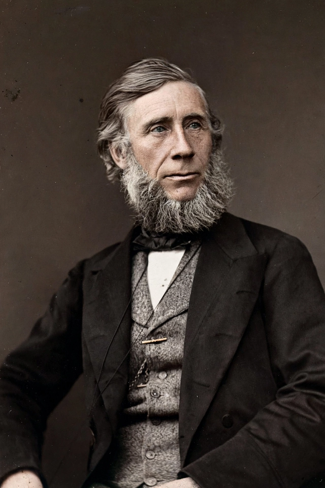

John Tyndall
| John Tyndall | |
|---|---|
| Born | 2 August 1820, Leighlinbridge, Ireland |
| Died | 4 December 1893, Haslemere, England |
| Field | Physics |
| Known for | Infrared absorption by gases; Tyndall effect |

John Tyndall (1820–1893) was an Irish physicist whose experiments in 1859 demonstrated that water vapour, carbon dioxide and other gases absorb infrared radiation — the first laboratory proof of the mechanism behind the {L('Greenhouse_effect')}.
Working at London's Royal Institution, Tyndall was also a celebrated lecturer and mountaineer, and his name survives in the Tyndall effect (the scattering of light by colloids, which helps explain the blue of the sky).
The 1859 experiments
Using a thermopile and a tube through which he passed different gases, Tyndall measured how much radiant heat each absorbed. The simple gases oxygen and nitrogen were nearly transparent; water vapour, carbon dioxide, ozone and hydrocarbon gases absorbed strongly. He immediately grasped the climatic implication, writing that changes in the atmosphere's water vapour or carbon dioxide 'may have produced all the changes of climate which the researches of geologists reveal'.
His measurements, refined over the following years, laid the experimental foundation later built on by {L('Svante_Arrhenius')} and every subsequent student of the greenhouse effect.
Other work
Tyndall researched diamagnetism, glacier motion (entering a famous dispute with James David Forbes), sound, and the sterilisation of infusions ('tyndallisation'). A tireless populariser, his Royal Institution lectures and books brought physics to wide audiences. He died in 1893 from an accidental overdose of a sleeping draught administered by his wife.
See also: Greenhouse effect · Svante Arrhenius · Climate change · Infrared